Introduction
STM32CubeMX is a software that helps to generate initial code for a project visually. By using STM32CubeMX, you can make the initial configuration, such as clocks, gpio, DMA. It can also help to estimate the power consumption.
Keil is the IDE. It integrates functions such as debugging, library management.
Example
Example (generate a blinky program for Nucleo)
- New Project: It will download update from remote servers. The process can take a while.
- Select chip model: This example uses Nucleao F103RB development board, so selecting the STM32F103RB model.
- Config GPIO: the on-board led is connected to Pin A5, so selecting PA5 as GPIO_OUTPUT
Green pins are configured, yellow pins are power supply, gray pins are reset (default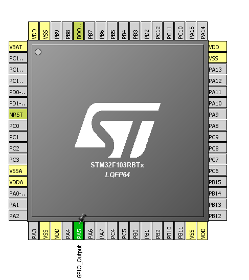 - Config clock: the source of clock input. STM32 can have different clock inputs.
The first step is optional because we can just use the default high speed internal 8MHz clock generator. Nocleo does not come up with a external clock actually. You have to solder one if you want to use the external clock source.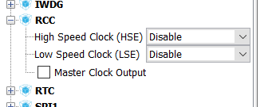
The second step is to config the registers
This example uses the 8M HSL with /2 * 16 PLL to obtain a 64M System clock.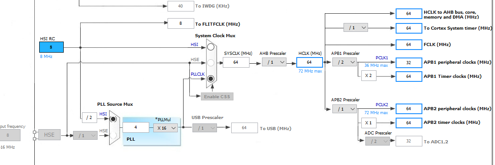 - Other configuration: DMA, GPIO, Interrupts
In this example, we don't need to do these configuration. - Generate code:
STM32CubeMX can help to generate the inital code for IDE, such as Keil or a bare metal Makefile.
You may need to download some packages during this process.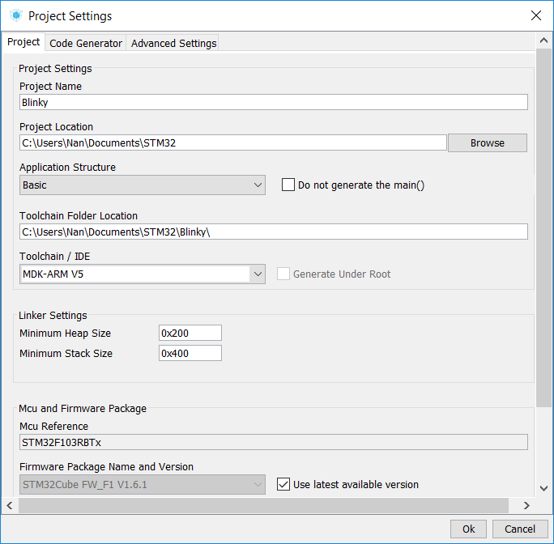 - Open with Keil (version 5):
Project structure:
Application/MDK-ARM/startup_stm32f103xb.s: this code run before the main.c. It reset the clock and load main.c.
Application/User/main.c: user code; stm32f1xx_it.c: user-defined interrupt handler; stm32f1xx_hal_msp.c: user-initialized peripheral.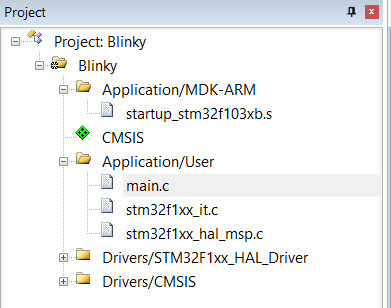 - Editing main.c:
The comments is create by STM32CubeMX. They are used to re-initialize the project and avoid replacing user's code.
User code can only be placed inside centain comments area. Otherwise, it will be replaced.
Inside the main.c: reset all peripheral -> config system clock as user-defined -> config all peripheral as user-defined. For example, the GPIO_PIN_A_5 is initalized in the MX_GPIO_Init function.
Find the function for toggling gpio, click the "function" at the bottom.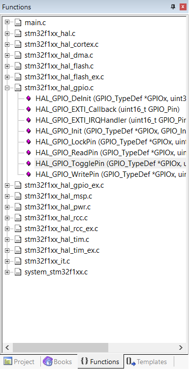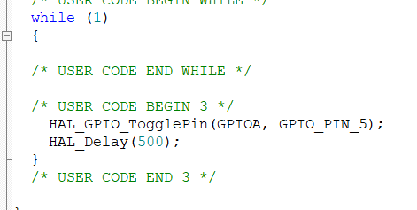 - Build project:
click this icon: 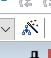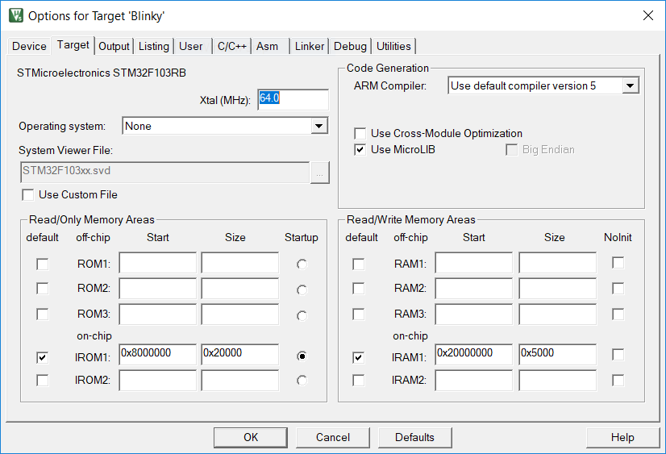
This panel is used to configuration the compile options (under C/C++), and debug option. - Deploy to STM32 with ST-link:
The Nucleo has a st-link, so we use st-link as the programmer. (You may need download the driver
here)
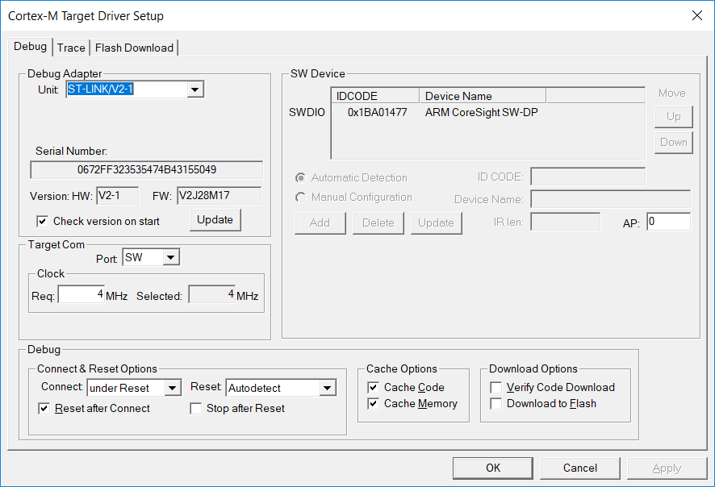build and load 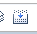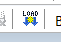